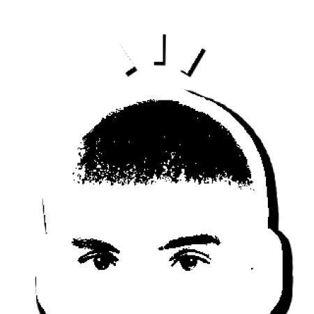
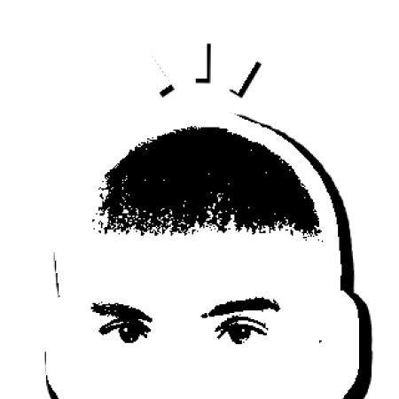

À propos
 

À 21 ans, passionné de théâtre et de design, je construis progressivement mon regard et mon sens de la
composition à travers différentes formes de création. Basé à Marseille, je suis actuellement en troisième année
de DN MADE Graphisme, mention Identité et supports de communication. J’explore aussi bien les supports imprimés
que numériques, avec une attention particulière portée au sens, à l’esthétique et à l’impact des images. Cette
diversité alimente ma curiosité et nourrit mon envie d’expérimenter, d’apprendre et de développer une pratique
toujours plus personnelle.
Je cherche avant tout à continuer d’évoluer, à affiner mon approche du design graphique et à m’inscrire dans des
projets qui me permettent de repousser mes limites, tant sur le plan créatif que conceptuel.